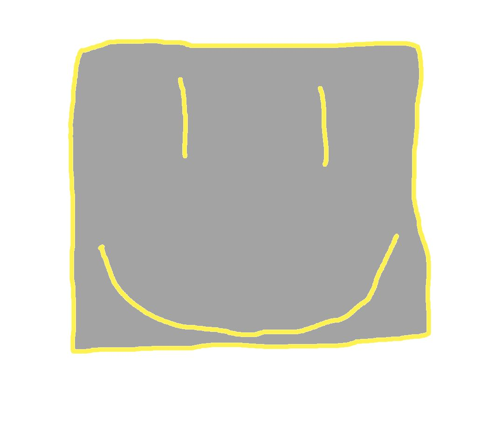

Zoxel is a Roblox-style voxel multiplayer platform. You join, you play, you chat. Studio tools come later.
Live client: Rust + Bevy . Run with cargo run -p zoxel-client . Website: TypeScript . Scripting later: Luau . Backend: PostgreSQL .
Not the old Deus game from itch.io. Not Godot. We build our own engine, our own assets, our own game.
Roadmap
- 2026 Q1
- Closed tests, Windows only
- 2026 Q2
- First public playtest
- 2026 Q3
- Website, profiles, devlogs
- 2026 Q4
- Larger playtest, no iPad yet
Q&A
More Roblox-style projects: OpenSBC (we support OpenSBC)
Q: What editor do you use?
A: VS Code. We build the client from there.
Q: Looking for devs/builders?
A: Not right now. Small team.
Q: Tech stack?
A: Rust (game), TypeScript (site), Luau (scripts later). C++, Python, Go for tools.
Early stage. Studio not ready. Come back when the Windows client is stable.
